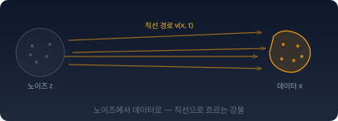
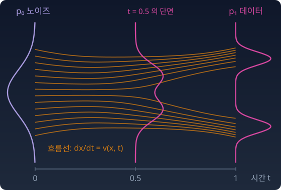
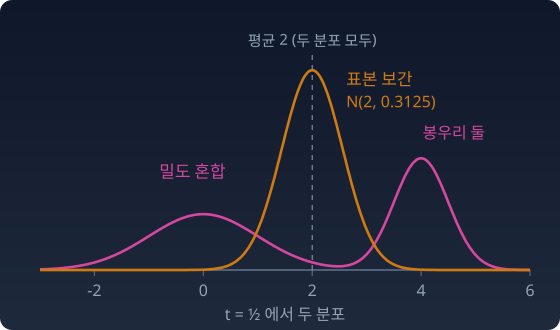

플로우 매칭
디퓨전 모델로 그림 한 장을 만들 때 일어나는 일을 떠올려 보자. 노이즈 한 점에서 출발해, 신경망이 알려 주는 방향으로 조금 걷고, 다시 신경망을 불러 방향을 묻고, 또 조금 걷는다. 이 걸음을 수십 번 되풀이해야 그림이 나온다. 디퓨전 모델이 배운 것은 매 지점의 방향, 곧 데이터에 대한 스코어 ∇ₓ log p(로그 밀도가 가장 빠르게 커지는 방향)뿐이기 때문이다. 그 방향으로 얼마나, 어떤 무작위 흔들림과 함께 걸을지는 따로 정한 걷는 규칙이 맡는다. 노이즈가 짙은 정도마다 방향도 달라서 걸음을 잘게 나누어 그때마다 다시 물어야 한다. 짙은 안개(노이즈) 속에서, 드래곤볼(데이터가 몰린 곳)을 가리키는 레이더 바늘(스코어)만 보며 한 걸음씩 걷는 참가자와 같다.
우리가 정작 원하는 것은 “노이즈에서 데이터로 가는 것” 하나다. 방향과 걷는 규칙을 따로 두는 대신, 노이즈의 한 점이 시간마다 어디로 얼마나 빨리 움직이는지를 통째로 배우면 어떨까? 걷는 규칙까지 신경망 안에 넣어 버리는 셈이다.
이 장의 시간 t는 플로우 매칭 문헌의 관례를 따른다. t = 0이 노이즈, t = 1이 데이터다. 디퓨전 문헌(t = 0이 데이터)과는 방향이 반대다.

속도장: 노이즈를 데이터로 실어 나르는 흐름
방향만 아는 참가자에게는 걷는 규칙이 따로 필요했다. 위치와 시간만 넣으면 "지금 어디로, 얼마나 빨리"를 바로 알려 주는 지도가 있다면 규칙은 필요 없다. 그런 지도는 어떻게 생겼고, 그 지도가 노이즈 전체를 데이터 전체로 옮긴다는 것은 무슨 뜻일까?
철새의 이주 — 흩어진 출발점, 제각각의 도착지
가을이 온다. 시베리아에서 여름을 난 흑두루미 수천 마리가 남쪽으로 날아간다.
각 새는 제각각의 출발점에서 출발한다. 시베리아 동쪽 끝의 새도 있고 서쪽 끝의 새도 있다. 도착지도 제각각이다. 한반도 남쪽 순천만에 내리는 무리도 있고, 바다 건너 일본 이즈미까지 가는 무리도 있다. 시베리아에 흩어진 새 떼를 노이즈로, 겨울을 나는 습지들에 모인 새 떼를 데이터로 놓아 보자.
그런데 새들은 길을 잃지 않고 도착한다. 어떻게?
실제 철새는 해와 별, 지구 자기장을 나침반처럼 쓰고, 두루미처럼 무리 지어 사는 새는 어린 새가 나이 든 새를 따라 날며 첫 이주 때 길을 익힌다고 알려져 있다. 여기서는 그 결과만 비유로 빌린다. 길을 다 익힌 새는 "이 위도, 이 날짜에는 이 방향으로 이 빠르기로"를 그때그때 따져 보지 않고 안다. 시간과 위치를 넣으면 속도가 나오는 함수, 곧 속도장이다. 이 장에서는 그것을 비행 프로그램이라고 부른다. 새는 이 속도장을 따라 흐를 뿐이다.
플로우 매칭은 매 지점의 방향이 아니라, 이렇게 노이즈에서 데이터로 흘러가는 속도장(velocity field)을 직접 학습한다.
속도장이 분포를 옮긴다
새 한 마리는 속도장을 따라 dx/dt = v(x, t)로 난다. 새 떼 전체의 밀도 pt는 그 흐름에 실려 옮겨 간다. 어느 작은 구역의 새 수가 변하는 양은, 그 구역 경계로 드나드는 새의 수와 같다. 새가 도중에 생기거나 사라지지 않으니까.
연속방정식이다. 플로우 매칭의 목표는 이 식을 만족하면서 p₀ = 노이즈를 p₁ = 데이터로 옮기는 v를 찾는 것이다. 그런 v를 알면 노이즈 한 점을 뽑아 ODE(상미분방정식, ordinary differential equation)를 풀기만 하면 샘플이 된다.

디퓨전과 무엇이 다른가
디퓨전의 레이더 바늘은 "지금 여기서 로그 밀도가 가장 빠르게 커지는 방향"만 알려 준다. 그 방향으로 얼마나, 어떤 바람(매 걸음에 더하는 무작위 흔들림)과 함께 걸을지는 역방향 SDE(확률미분방정식, stochastic differential equation)나 확률흐름 ODE(같은 분포를 지나되 바람을 뺀 걷는 규칙)라는 규칙이 따로 정했다.
철새의 비행 프로그램은 "시간 t에 위치 x에 있다면, 속도는 v(x, t)이다"를 바로 준다. 여기에도 시간이 들어 있다는 데 주의하자. 디퓨전의 스코어가 안개 수준마다 달랐듯, 속도장도 시간마다 다르다. 안개 수준을 신경 쓸 필요가 없어지는 것이 아니라, 시간이 처음부터 프로그램의 입력으로 들어가 있는 것이다.
| 신경망이 배우는 것 | 걷는 규칙 | |
|---|---|---|
| 디퓨전 | 매 지점, 매 안개 수준의 스코어 ∇ₓ log pt(x): “어디로 끌리는가” | 따로 필요하다 (역방향 SDE, 확률흐름 ODE) |
| 플로우 매칭 | 매 지점, 매 시간의 속도 v(x, t): “어디로 흘러가는가” | 속도장이 곧 규칙이다 |
끌림에서 흐름을 만들려면 규칙이 하나 더 필요하고, 흐름은 그 자체로 규칙이다. 둘이 한 식으로 서로 옮겨진다는 것은 이 장의 「속도와 스코어의 다리」 절에서 본다.
직선 비행 — 가장 단순한 경로
그렇다면 어떤 속도장을 배워야 할까? 속도장 전체를 처음부터 정하기는 어렵다. 대신 새 한 마리의 길부터 정해 보자. 가장 단순한 방법은 노이즈 점 z 하나와 데이터 점 x 하나를 짝지어 직선으로 잇는 것이다.
시베리아에서 한반도까지 가장 단순한 경로는 출발점과 도착점을 잇는 직선이다. 바람도 무시하고, 지형도 무시하고, 일정한 속도로 직진.
시간 t에서의 위치는 출발점 z와 도착점 x의 가중평균이다. t = 0이면 출발점(노이즈), t = 1이면 도착점(데이터).
(1 − t)·z + t·x 는 두 점의 볼록 결합이다. 두 점을 잇는 선분 위의 점. 볼록 결합이 "사이"를 정의하듯, 여기서도 노이즈 한 점과 데이터 한 점 "사이"를 정의한다.
밀도 혼합 — 닮았지만 다른 길
잠깐. 이 수식은 두 분포를 섞는 식과 모양이 같다. 노이즈 분포와 데이터 분포의 가중평균 (1 − t)·p₀ + t·p₁ 이다. 두 분포의 확률을 그대로 섞는 가장 곧은 길, 곧 덧셈의 길(m-측지선)이다.
모양이 똑같다. 그런데 섞는 대상이 다르다. 덧셈의 길은 밀도를 섞는다. “확률 t로 데이터, 1 − t로 노이즈에서 뽑는다.” 여기서는 표본을 섞는다. “노이즈 한 점과 데이터 한 점을 뽑아 그 사이의 점을 취한다.” 표본을 섞으면 분포는 섞이지 않는다. 합성곱이 된다.
가우시안으로 보면 차이가 선명하다. z ~ N(0, 1), x ~ N(m, s²)이면
m = 4, s = 0.5, t = ½이면 표본 보간은 봉우리 하나짜리 N(2, 0.3125)다. 새 떼가 통째로 중간 지점을 날고 있다. 밀도 혼합은 0과 4에 봉우리가 둘인 분포이고 분산은 4.625다. 절반은 아직 시베리아에, 절반은 이미 한반도에 있다. 평균은 둘 다 2지만 전혀 다른 분포다.

표본을 섞는 이 길은 확률을 섞는 덧셈의 길과도, 확률을 곱해 섞는 곱셈의 길과도 다른 셋째 종류의 "사이"다. 이 길이 어떤 거리에서 가장 곧은 길인지는, 노이즈와 데이터를 어떻게 짝지을지 다루는 「최적 수송」 절에서 다시 본다.
파이썬
import numpy as np
rng = np.random.default_rng(0)
# 표본 보간의 분포 vs 밀도의 혼합: z ~ N(0,1), x ~ N(4, 0.5²), t = 0.5
t, n = 0.5, 1_000_000
z = rng.normal(0, 1, n); x = rng.normal(4, 0.5, n)
xt = (1 - t) * z + t * x # 표본을 섞는다
mix = np.where(rng.random(n) < t, x, z) # 밀도를 섞는다 (덧셈의 m-길)
print(f"표본 보간: 평균 {xt.mean():.3f} 분산 {xt.var():.4f}")
print(f"밀도 혼합: 평균 {mix.mean():.3f} 분산 {mix.var():.4f}")
# 표본 보간: 평균 2.001 분산 0.3127
# 밀도 혼합: 평균 1.998 분산 4.6251
수확
“디퓨전이 매 순간의 레이더라면, 플로우 매칭은 길을 다 익힌 새의 비행 프로그램이다. 둘 다 시간에 따라 바뀌는 방향의 지도(벡터장)다.”
문제 1. 조 점수를 매기는 두 방법
조원 두 사람의 점수가 있다. A의 점수는 평균 60점, 표준편차 10점으로 흔들리고, B의 점수는 평균 90점, 표준편차 5점으로 흔들린다. 두 사람의 점수는 서로 무관하다. 조 점수를 매기는 방법이 둘 있다. (가) 두 사람 점수의 평균을 조 점수로 한다. (나) 동전을 던져 앞면이면 A의 점수를, 뒷면이면 B의 점수를 조 점수로 한다. 두 방법에서 조 점수의 평균과 표준편차를 각각 구하라.
함께 풀기

평균은 둘 다 75점이에요. 표준편차는 (가)가 10이랑 5의 평균이라 7.5이고, (나)도 동전이 반반이니까 7.5요. 둘이 같아요.

(나)에서 나올 법한 점수를 몇 개 떠올려 봐요. 60점 근처와 90점 근처가 반반이면, 75점에서 보통 얼마나 떨어져 있어요?

거의 늘 15점쯤 떨어져 있네요. 7.5일 리가 없어요. 동전은 "누구 점수냐"가 갈리는 흔들림 15점을 따로 얹어요. 분산으로 (100 + 25)/2 + 15² = 287.5, 표준편차 17.0이에요.

(가)도 표준편차를 평균 내면 안 돼. 점수에 ½을 곱하면 분산은 ¼이 되니까 ¼ × 100 + ¼ × 25 = 31.25, 표준편차 5.59야. 두 사람이 서로 무관하게 흔들려서 흔들림이 일부 깎여.
표본 백만 개로 돌려 봐도 5.59랑 16.95예요. 평균은 똑같이 75인데 (가)는 다들 중간 점수, (나)는 잘하거나 망하거나네요.
그래도 5.59는 5와 10 사이에 있네. 점수를 섞으면 흔들림은 두 사람 흔들림 사이에 머무는구나.
그 말은 다음 문제에서 다시 따져 봐요.
문제 2. 표본을 섞으면
z ~ N(0, 1), x ~ N(4, 0.5²)이 독립이다. t = 0.8로 한다. (가) x0.8 = 0.2z + 0.8x의 분포를 구하고, 덧셈의 길 0.2N(0, 1) + 0.8N(4, 0.5²)과 평균·분산을 견주라. 둘은 같은가? (나) 출발 분포의 분산은 1, 도착 분포의 분산은 0.25다. 표본 보간 x0.8의 분산은 이 둘 사이에 머무는가?
함께 풀기
둘 다 평균이 3.2예요. 방금 표본 백만 개로 둘 다 뽑아서 평균을 찍어 봤는데 3.200이랑 3.201이에요. 식도 (1 − t)·a + t·b로 똑같고요. 같은 거예요.
평균 말고 분산은요?
…0.2000이랑 2.9637이요. 열다섯 배 차이네요. 평균만 보고 같다고 했어요.
나는 식으로 해 볼게. x0.8의 밀도는 합성곱이니까 ((1 − t)pz) * (t px) 를 계산하면…
그 식을 전체 구간에서 적분하면 얼마예요?

(1 − t) × t × 1 × 1이니까 0.16이에요. 확률밀도가 아니네요. 뭔가 섞였어요.
아, 알겠어요. 확률변수에 0.2를 곱하는 건 밀도에 0.2를 곱하는 게 아니에요. 0.2z의 밀도는 5pz(5y)예요. 변수의 배율과 밀도의 배율은 역수로 움직여요. 그걸 제대로 하면 N(0, 0.04)와 N(3.2, 0.16)의 합성곱이라 N(3.2, 0.2)예요.
덧셈의 길은 확률변수를 섞는 게 아니라 "어느 쪽에서 뽑을지"를 섞어요. 그래서 0과 4에 봉우리가 둘이고 분산은 0.2 × 1 + 0.8 × 0.25 + 0.16 × 16 = 2.96이에요.
(나)는 조 점수 문제에서 봤어. 섞으면 흔들림은 두 끝 사이에 머물러. 0.25와 1 사이.
방금 구한 분산 0.2를 다시 보세요.

…0.25보다 작아요. 출발 분포보다도, 도착 분포보다도 좁아요. 조 점수에서 5.59가 5와 10 사이에 있었던 건 그 숫자들이 그랬을 뿐이에요. 0.2² × 1 + 0.8² × 0.25에서 두 조각이 모두 제곱으로 줄어드니까, 두 분산이 엇비슷하면 양 끝보다 작아질 수 있어요.
t를 0부터 1까지 돌리면서 (1 − t)² + 0.25t²를 찍어 봤는데, 바로 t = 0.8에서 0.2로 가장 작아요. 새 떼가 도착 직전에 오히려 가장 촘촘하게 뭉쳐 나네요.
그래요. 식의 모양이 같아도 무엇을 섞는지가 다르면 다른 길이에요. 표본을 섞는 길에서는 분산이 양 끝 사이에 머문다는 보장도 없어요.
선형대수 수업에서 서로 직교하는 두 단위벡터의 평균은 길이가 1/√2로 짧아지는 걸 봤어요. 서로 무관하게 흔들리는 두 변수를 섞는 것도 같은 모양이에요. 흔들림이 서로 깎여요.